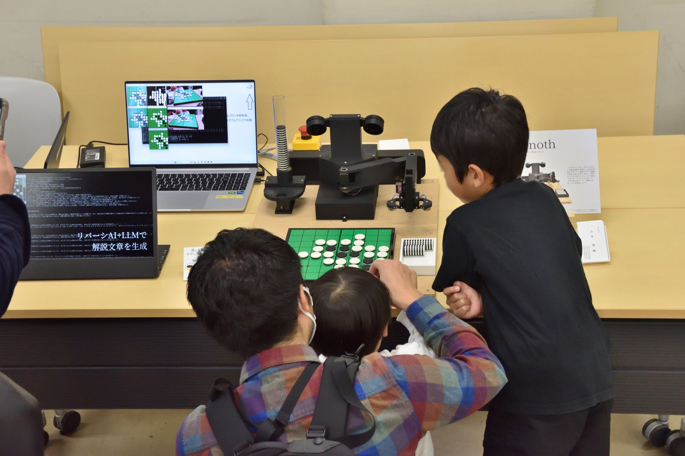
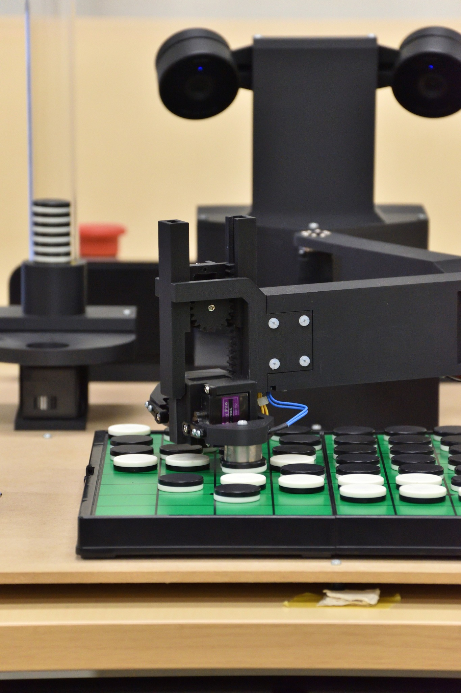
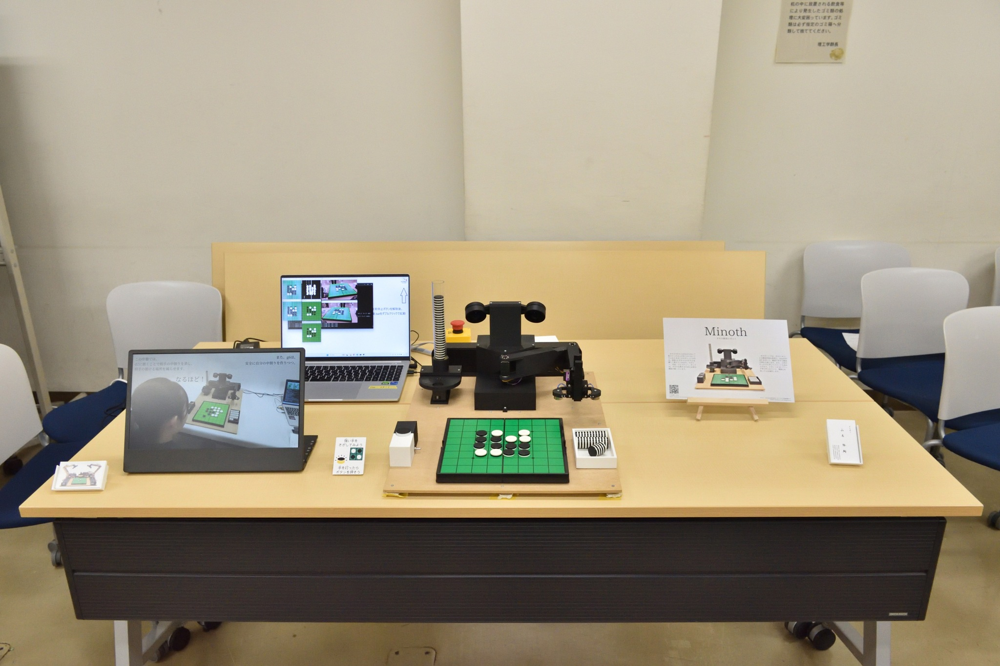

English
雙峰祭2025 ものづくり展示会 -メイカー〆切祭-
オセロ教授ロボット "Minoth" (2025)
筑波大学の学祭「雙峰祭」での展示企画「メイカー〆切祭」での展示です。
私の出展物はMinothです。

詳細
日時: 2025/11/02-03
場所: 筑波大学 3A203
ものづくりが好きな人、集まれ！ロボット、電子工作、プログラミング、他にもいろいろ。筑波大学で自由にものづくりを楽しむ人たちが、個性あふれる展示を行います。趣味のものづくりを謳歌する「メイカー」たちをぜひご覧ください。